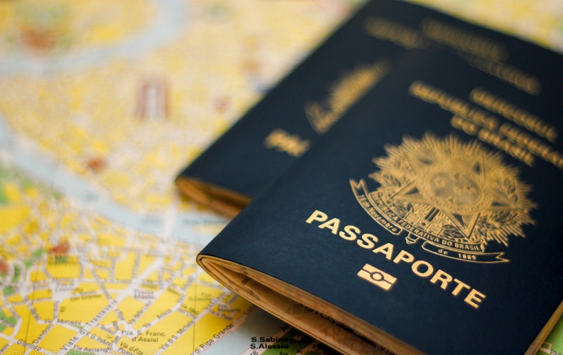
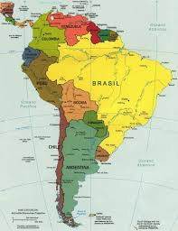

Exemplo de post
Motivos para você viajar pela América do Sul.
Viajar pela América do Sul é um dos grandes prazeres da vida de um viajante. O nosso continente tem uma incrível soma de destinos, experiências, histórias e paisagens para todos os gostos. De praia a picos de neve, temos de tudo. E sem andar tanto assim! Então, você já parou para pensar nos motivos para você viajar pela América do Sul?
Preço
O primeiro motivo já agrada a gregos e troianos. Sim, é barato viajar pela América do Sul!! Claro que tudo depende do seu estilo de viagem. Dá para viajar gastando muito também. Mas se você é econômico, não vai ser um grande rombo na sua conta bancária.No geral, é mais barato viajar pela América do Sul, que pra qualquer outro continente. É o plano perfeito para a primeira viagem internacional, por exemplo.
Tempo
Como os países estão ali coladinhos no Brasil, você consegue fazer um boa viagem em pouco tempo. O principal exemplo é Buenos Aires. Você pode ir para a Argentina por 4 dias, por exemplo. Foi assim que eu conheci Buenos Aires.Uma viagem de 4 dias é impossível se você pretende conhecer os Estados Unidos ou a Europa, por exemplo. Assim como uma semana. Mas em uma semana, você pode viajar para lugares como o Uruguai. Você consegue aproveitar bem um feriado brasileiro! Use e abuse.
Cultura
Conhecer uma nova cultura é um dos motivos que escolhemos viajar. E mesmo dividindo um continente, os brasileiros tem uma cultura diferente do resto da América do Sul. Talvez por ser mais desenvolvido ou pelo nossa colonização ser portuguesa e não espanhola, somos diferentes.Viajando pela América do Sul, você vai ver roupas diferentes, comidas, diferentes, dialetos diferentes e hábitos diferentes também. Não precisamos ir muito longe para conhecer pessoas e lugares fora da nossa realidade. Ponto para a América do Sul!
Facilidade de documentação
Um dos pontos favoritos dos viajantes! Para vários países da América do Sul, os brasileiros não precisam de passaporte para entrar! Isso mesmo, a sua identidade é o suficiente para se aventurar por vários países do continente!

Clima
O bom da América do Sul é que você encontra praias maravilhosas na Colômbia ao mesmo tempo que estações de esqui na Argentina e picos de neve no Chile. Aqui tem atração para qualquer público. Mochileiros na Bolívia, casais no Chile, amigos no Uruguai. Calor ou frio, a América do Sul é sempre uma boa pedida!
Conversão do câmbio
Já estipulamos que viajar pela América do Sul pode sair a um bom preço. Isso sem contar que as moedas são mais baratas que o Real, então na hora de converter os seus gastos, fica tudo bem mais barato!Até em países como o Peru, que tem uma moeda do mesmo peso do Real, o custo de vida é menor.

Idioma
Você não vai encontrar outro país na América do Sul que fale português. Mas também não vai trombar por aí com mandarim ou alemão. O espanhol é um idioma próximo ao português e super tranquilo viajar no “portunhol”. Não precisa quebrar a cabeça com o idioma na hora de viajar. Facilita muito!

Paisagens
Por último mas não menos importante, as paisagens. Derivadas dos diferentes climas do continente, a América do Sul tem paisagens incríveis! É só pesquisar o Salar de Uyuni ou a Patagônia que você vai se apaixonar de cara pelo nosso cone americano!